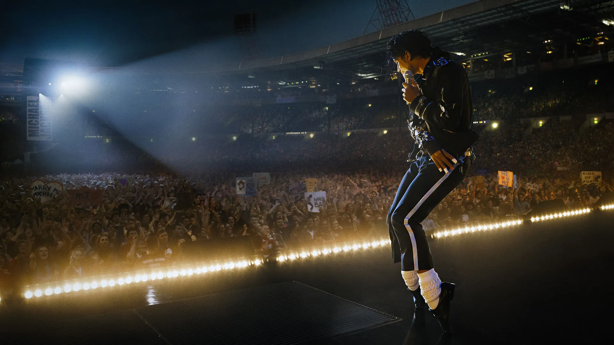
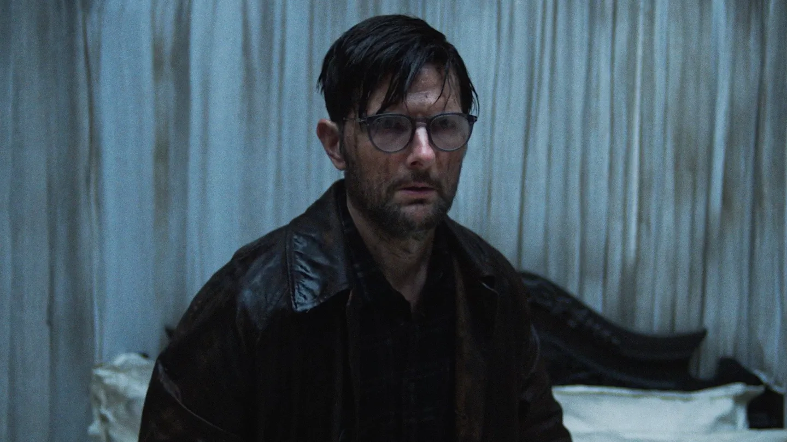
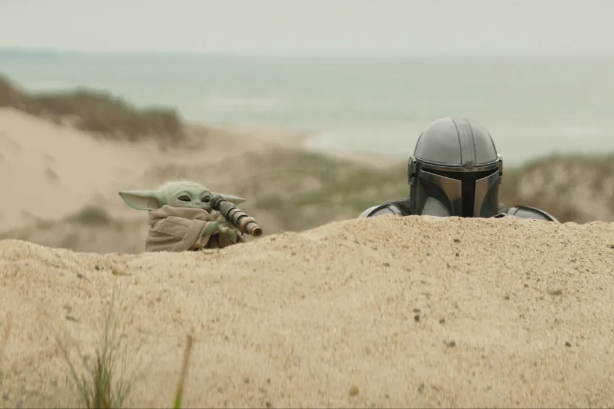
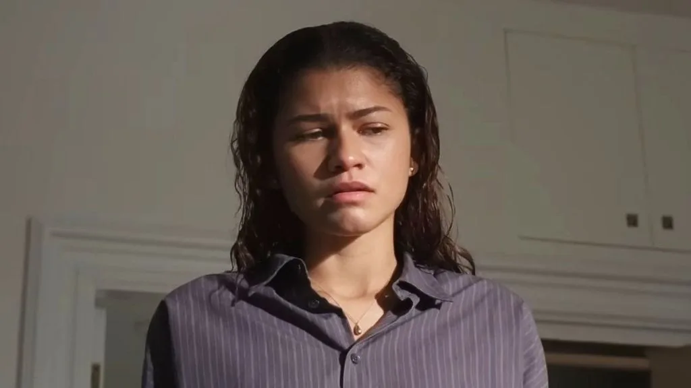
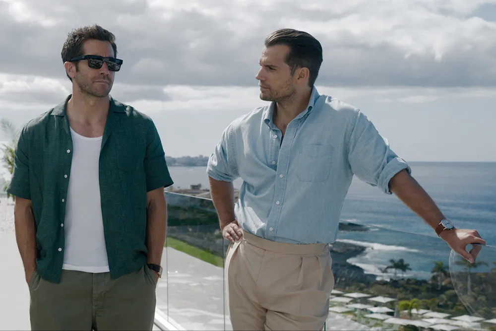
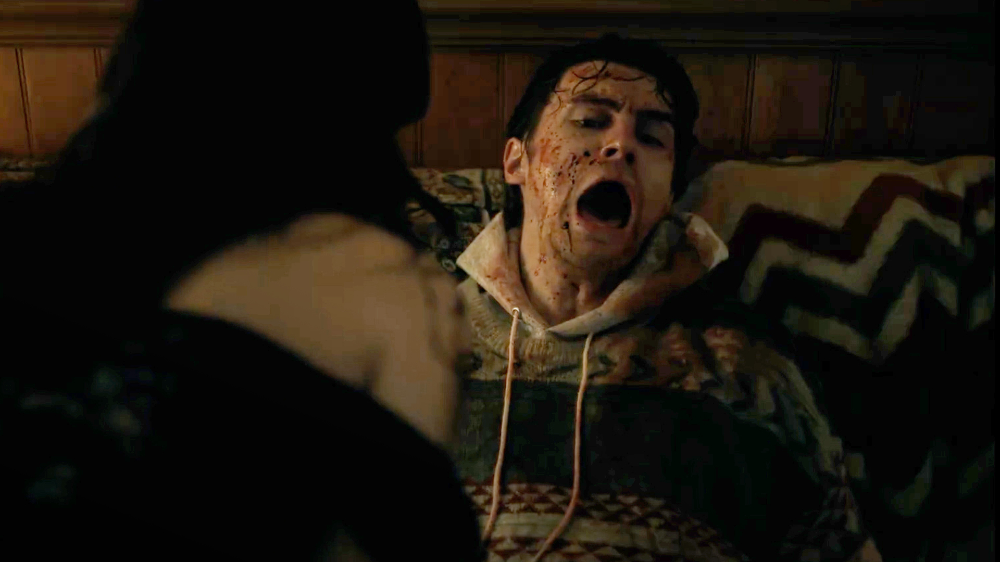
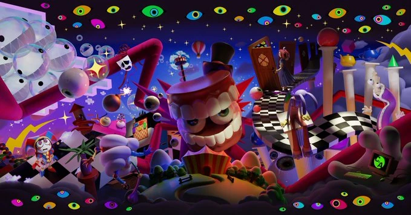

Originalni Top Gun iz 1986. danas djeluje kao savršena kapsula američke pop-kulture osamdesetih -
pun adrenalina, patriotizma, motora, aviona i ogromne količine samopouzdanja. Priča je relativno
jednostavna, ali film funkcioniše zahvaljujući karizmi Tom Cruise, odličnom soundtracku i ikonografiji
koja je ostala prepoznatljiva skoro četiri decenije. Neke scene danas djeluju zastarjelo ili pretjerano
“macho”, ali upravo to filmu daje šarm.
Maverick radi ono što rijetko kojem legacy nastavku uspije — poštuje original, a istovremeno ga nadograđuje.
Film ima mnogo više emocija, ozbiljnije teme i vjerovatno najbolje praktične scene letenja ikad snimljene u
blockbuster filmu. Fokus na mentorstvu, starenju i suočavanju sa prošlošću daje dubinu koju prvi film nije imao.
Vizuelno i tehnički, Maverick je spektakl, ali nikad ne zaboravlja likove. Mnogi ga smatraju boljim od originala
upravo zato što uspijeva spojiti nostalgiju i moderan tempo bez osjećaja da je “fan service”.
Ocjena: 4.8/5
The Devil Wears Prada 2
Nastavak kultnog filma iz 2006. uspio je izbjeći najveću zamku modernih nastavaka - da bude samo nostalgija bez ideje.
Film vraća Mirandu Priestly, Andy Sachs i Emily Charlton u potpuno drugačiji svijet medija, gdje print magazini gube moć,
a digitalni sadržaj i AI dominiraju industrijom.
Najveća snaga filma je i dalje Meryl Streep, koja Mirandu igra s nevjerovatnom lakoćom. Anne Hathaway i Emily Blunt
imaju mnogo bolju dinamiku nego u prvom filmu, a priča djeluje zrelije i manje fokusirana na “makeover fantasy”. Međutim,
film povremeno pokušava obraditi previše tema odjednom - AI, medijsku krizu, korporacije i društvene mreže - pa neki
sporedni likovi ostanu nerazrađeni.
Ipak, za fanove originala ovo je veoma uspješan povratak svijetu Runwaya: elegantan, zabavan i pametniji nego što se očekivalo.
Ocjena: 3.2/5

Michael
Michael je jedan od najrizičnijih biografskih filmova posljednjih godina jer pokušava prikazati život vjerovatno najveće pop
zvijezde ikada - Michael Jackson. Već iz trailera i dostupnih informacija vidi se da film cilja na grandiozan pristup, sa
velikim muzičkim scenama i fokusom na Jacksonovu transformaciju od dječije zvijezde do globalnog fenomena.
Najveći plus zasad djeluje izbor Jaafar Jackson za glavnu ulogu - fizički i pokretima nevjerovatno podsjeća na Michaela.
Međutim, ostaje pitanje koliko će film biti objektivan prema kontroverzama koje su obilježile Jacksonov život. Ako previše
idealizira glavnog lika, mogao bi izgubiti emocionalnu težinu. Ako pronađe balans između genijalnosti i tragedije, mogao bi
postati jedan od najboljih muzičkih biopica posljednje decenije.
Ocjena: 5.0/5

Hokum
Hokum je tip horora koji podsjeća zašto “klasične” ghost story priče još uvijek mogu biti zastrašujuće kada ih režira
neko ko razumije atmosferu i psihološku napetost. Film prati pisca Ohma Baumana koji dolazi u izolovani hotel kako bi
prosuo pepeo svojih roditelja, ali se vrlo brzo uplete u priče o vještici, nestancima i neobjašnjivim pojavama koje ga
tjeraju da se suoči sa vlastitim traumama.
Hokum je film koji balansira između klasičnog horora i psihološke drame. Iako ima elemente nadnaravnog, najveći strah
dolazi iz unutrašnjih demona glavnog lika i njegove nesposobnosti da se nosi sa prošlošću. Film ne koristi jeftine
trikove da bi uplašio publiku, već gradi napetost kroz atmosferu i karakterizaciju.
Najveća snaga filma je način na koji Damian McCarthy gradi strah. Hokum nema potrebu da publiku bombarduje gore scenama
ili konstantnim jumpscareovima. Umjesto toga, film koristi tišinu, neizvjesnost i osjećaj da nešto “nije u redu”.
Atmosfera je gotovo hipnotična — tmurni hodnici hotela, irski folklor i sanjarska fotografija stvaraju osjećaj da gledalac
zajedno s glavnim likom polako gubi kontakt sa stvarnošću.
Adam Scott donosi vjerovatno jednu od svojih najboljih ozbiljnih uloga do sada. Njegov Ohm je istovremeno odbojan, slomljen
i veoma ljudski lik, a film uspijeva balansirati između paranormalnog horora i emocionalne priče o traumi i krivici. Posebno
dobro funkcioniše način na koji McCarthy koristi folklor — vještice, duhovi i jeziva bića nisu tu samo radi estetike, nego
djeluju kao produžetak psihološkog stanja glavnog lika.
Ocjena: 4.0/5

Mandalorian i Grogu
Ovaj film ima težak zadatak: prenijeti atmosferu serije The Mandalorian na veliko platno bez gubitka intimnog odnosa
između Dina Djarina i Grogua. Upravo je ta “otac i dijete” dinamika bila srce serije, dok su akcija i Star Wars nostalgija
bili dodatak.
Očekivanja su ogromna jer je The Mandalorian praktično spasio reputaciju modernog Star Warsa nakon podijeljenih reakcija na
sequel trilogiju. Ako film ostane fokusiran na likove i praktični western stil serije, mogao bi biti odličan bioskopski
Star Wars film. Ako previše ode u CGI spektakl i fan service, postoji rizik da izgubi ono što je seriju činilo posebnom.
Ocjena: 4.7/5

Drama
The Drama na prvi pogled izgleda kao elegantni romantični film o savršenom paru pred vjenčanjem — privlačni protagonisti,
luksuzni stan u New Yorku i odnos koji djeluje gotovo idealno. Međutim, film vrlo brzo pokazuje da iza te površine krije
mnogo mračnija i psihološki kompleksnija priča. Umjesto klasičnog romcoma, dobivamo anksioznu i moralno neugodnu dramu koja
koristi temu school shootinga kao pozadinu za preispitivanje ljubavi, empatije i ljudske prirode.
Najveća snaga filma je atmosfera stalne nelagode. The Drama ne šokira eksplicitnim scenama nasilja, nego psihološkim pritiskom
i moralnim dilemama koje postavlja pred gledatelja. Film konstantno tjera publiku da razmišlja o tome koliko zapravo poznajemo
ljude koje volimo i gdje završava razumijevanje, a počinje neprihvatljivo. Kristoffer Borgli režira film veoma hladno i
kontrolisano, što dodatno pojačava osjećaj emocionalne tjeskobe.
Zendaya i Robert Pattinson nose gotovo cijeli film i njihova hemija funkcioniše odlično. Posebno je efektan način na koji film
balansira između emocionalne drame, crnog humora i napetosti, pa se čak i tokom najtežih scena povremeno pojavi trenutak apsurdnog
smijeha. Upravo ta kombinacija čini da film djeluje vrlo “ljudski”.
Ocjena: 4.9/5

In the Grey
Guy Ritchie je posljednjih godina pronašao stabilnu formu sa stylish akcijskim trilerima, a In the Grey izgleda kao
nastavak tog pristupa. Film vjerovatno neće revolucionirati žanr, ali bi mogao biti veoma zabavan zahvaljujući brzom tempu,
britkom humoru i karizmatičnoj glumačkoj postavi.
Ako voliš Ritchiejev stil iz filmova poput The Gentlemen ili Wrath of Man, velike su šanse da će ti i ovo odgovarati.
Glavni rizik je da film djeluje previše poznato i formulačno, jer Ritchie ponekad reciklira vlastite trikove.
Ocjena: 4.2/5

Obesija
Obsesija je psihološki horor koji uspijeva spojiti romansu, nelagodu i supernatural elemente na prilično originalan način.
Priča prati povučenog mladića koji poželi da se njegova simpatija zaljubi u njega — ali kada mu se želja ostvari, situacija
brzo postaje opsesivna i zastrašujuća.
Film više gradi napetost kroz atmosferu i emocionalnu nelagodu nego kroz klasične jumpscareove. Najjači dio filma je
transformacija glavnog odnosa iz nečeg romantičnog u gotovo noćnu moru o kontroli i posesivnosti. Režija Curryja Barkera
djeluje iznenađujuće sigurno za ovakav tip indie horora, a gluma Michaela Johnstona i Inde Navarrette nosi veliki dio filma.
Posljednji dio filma pomalo pretjera sa simbolikom i haotičnim momentima, Obsession ostaje veoma efektan moderni psihološki
horor koji koristi ljubav i opsesiju kao glavni izvor straha.
Ocjena: 4.0/5

The Amazing Digital Circus
Amazing Digital Circus je vjerovatno najveći indie animacijski fenomen posljednjih godina - serija koja je na prvi pogled
djelovala kao haotična, šarena internet-komedija, a vrlo brzo se pretvorila u jednu od emocionalno najtežih i psihološki
najzanimljivijih animacija moderne internet ere. Ono što je počelo kao “weirdcore” cirkus pun apsurdnog humora i neonskog
haosa postalo je priča o identitetu, izolaciji i strahu od gubitka vlastitog uma.
Najveća snaga serije je način na koji kombinuje potpuno suprotne tonove. U jednom trenutku likovi vode apsurdne i gotovo
dječije razgovore, a već u sljedećem serija postaje egzistencijalni horor. Upravo ta konstantna promjena između humora i
nelagode čini da Digital Circus djeluje toliko jedinstveno. Iza svih boja, glitch efekata i “internet brainrot” energije
krije se veoma depresivna priča o ljudima zarobljenim u svijetu iz kojeg možda nikada neće pobjeći.
Pomni funkcioniše kao savršen glavni lik jer publika zajedno s njom otkriva koliko je taj svijet zapravo nestabilan i
psihološki opasan. Njena anksioznost i konstantni osjećaj panike daju seriji emocionalnu težinu koja je iznenadila mnoge
gledatelje. Ostali likovi, posebno Jax, Ragatha i Kaufmo, dodatno pojačavaju osjećaj da svaki stanovnik cirkusa pokušava
sačuvati razum na svoj način.
Vizuelno, serija izgleda kao spoj dječijeg CGI crtića i noćne more interneta. Animacija je namjerno prenaglašena, puna
jarkih boja, deformisanih izraza lica i umjetne energije koja s vremenom postaje sve više uznemirujuća. Upravo zato finalna
epizoda koja dolazi u kina djeluje kao veliki trenutak za indie animaciju - rijetko koja web-serija uspije izgraditi ovako
ogromnu publiku i emocionalnu povezanost sa fanovima.